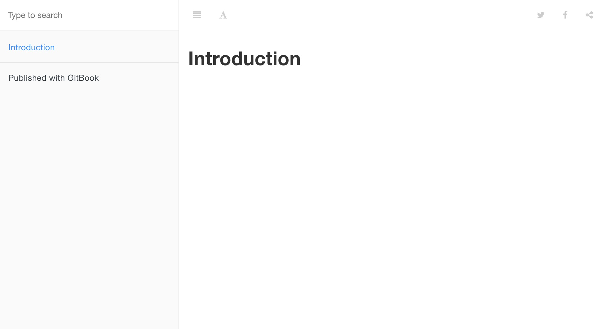

GitBook
借助 gitbook 可以让你使用 git 和 markdown 来编排图书
依赖
node.js
gitbook
npm install gitbook -g
使用
初始化
首先我们借助 gitbook 来初始化一个项目
gitbook init
会在目录下生成 README.md 和 SUMMARY.md 这两个文件
SUMMARY.md 用于设置目录名称和对应文件路径，初始化后默认的内容如下
# Summary
* [Introduction](README.md)
其中 Introduction 是目录名称，README.md 为该目录对应的 markdown 文件路径
本地预览
修改目录后我们可以进行本地预览
gitbook serve
对应可以看到如下效果

编译
执行
gitbook build
可以把 markdown 编译为 html 文件，输出在跟目录 _book 文件夹下